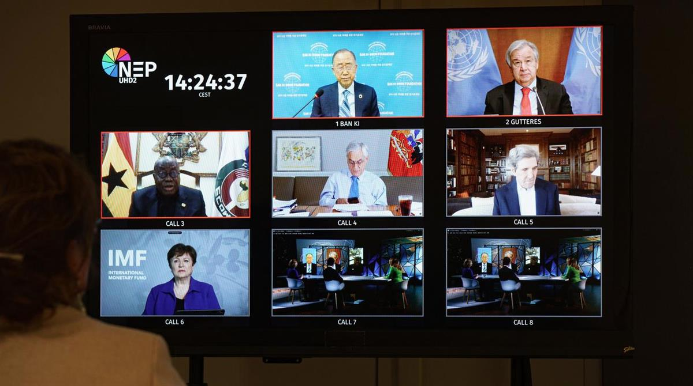

CLIMATE|#climate adaptation|NEWS
Published on 25 January 2021, 20:59. Updated on 25 January 2021, 21:48.
World leaders promise to step up efforts to prepare for climate impact
by Kasmira Jefford Michelle Langrand
Developed countries have pledged to scale up financial support for poorer countries as UN secretary general Antonio Guterres called on them to spend half of their climate investments on adaptation and resilience.
The climate adaptation summit kicked off on Monday with a number of pledges made by heads of state, including the US, Germany and France, to spend more on protecting the world’s vulnerable nations from the consequences of global warming.
This comes a few weeks after the UN Environment Programme released a report stating that countries were far off the mark in implementing the necessary measures to face the increasing risks of climate change, such as more frequent and severe floods, droughts, and hurricanes.
Wealthy countries are falling short of a decade-old pledge to ramp up climate financing for the developing world, which was meant to reach $100bn per year by 2020. As of 2018, the last year that the data was available, funds earmarked for climate-related projects totalled $78.9bn, theOECD reported in November. The amount set aside for adaptation grew by 29 per cent on the previous year to $16.8bn.
But even these estimates are hotly disputed, with other studies saying the real figure is much lower. According to a report released last week by Care International developed nations have “hugely exaggerated” climate adaptation finance to the tune of $20bn.
Speaking at Monday’s virtual summit, US envoy for climate, John Kerry, said the US would “make good” on its climate finance pledge and reassured his counterparts that his country would “do anything in their power to make up for” for its absence in the last four years. He said the US would contribute $2bn to help developing countries deal with the effects of extreme climate events.
Last year, the US spent $265bn cleaning up after three storms, Kerry noted. “We reached the point where it is an absolute fact that it's cheaper to invest in preventing damage or minimising it at least than cleaning up,” he added.
The former state secretary also said that the US intended to improve resilience to climate change by leveraging US innovation and climate data and by significantly increasing financial flows, including grants and loans, towards adaptation initiatives.

Photo: Climate Adaptation SummitUK Prime Minister Boris Johnson announced the launch of a new global partnership to tackle the effects of climate change, along with Bangladesh, Egypt, Malawi, the Netherlands, Saint Lucia, and the UN. The Adaptation Action Coalition intends to serve as a forum where knowledge and good practices can be shared to build up vulnerable communities’ resilience to climate change, Johnson said.
“If we fail to act in 2021 then by 2030 the annual bill for adaptation in developing countries alone will have reached as high as $300bn,” he added, citing UNEP figures.
Assuring that Germany “is pitching in”, Chancellor Angela Merkel said that her country would be contributing €100m for least developed countries, in addition to the €50m it had already pledged to the UN Adaptation Fund in December.
French President Emmanuel Macron announced that one third of the country’s climate financing would be allocated to adaptation measures, some 20 per cent short of what UN secretary general Antonio Guterres is asking of donors.
Read also: Half of climate finance should go towards adaptation, UN secretary general says
Some financial institutions, however, are already meeting this goal. David Malpass, president of the World Bank Group, said the financial institution was already spending half of its climate finance budget on adaptation and that it planned to continue to do so for the next five years. The African Development Bank committed 55 per cent of its investments to climate in 2019, as pointed out by its president Akinwumi Adesina.
Former UN secretary-general Ban Ki-moon, who is also co-chair and founder of the Global Commission on Adaptation, urged participants to accelerate climate adaptation as part of recovery efforts from the pandemic, warning that “only a tiny fraction of the trillions of dollars in economic stimulus funds so far are being earmarked for climate adaptation.”
#climate adaptation #climate finance #United Nations
SOURCE: GENEVA SOLUTIONS